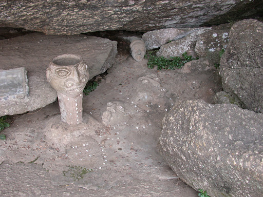
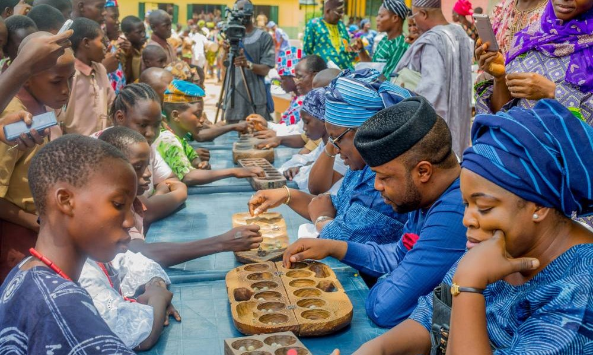
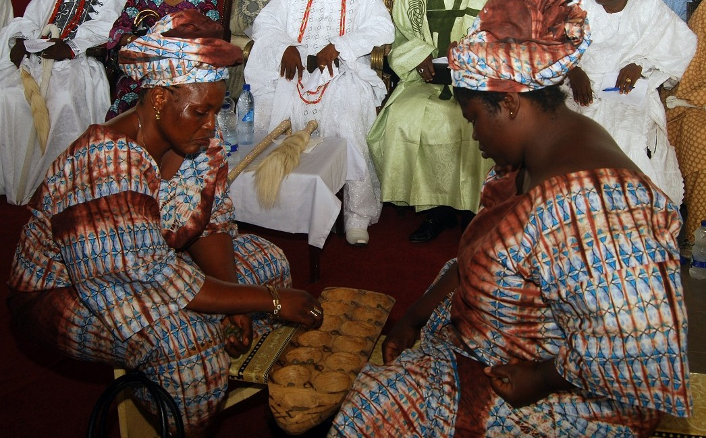
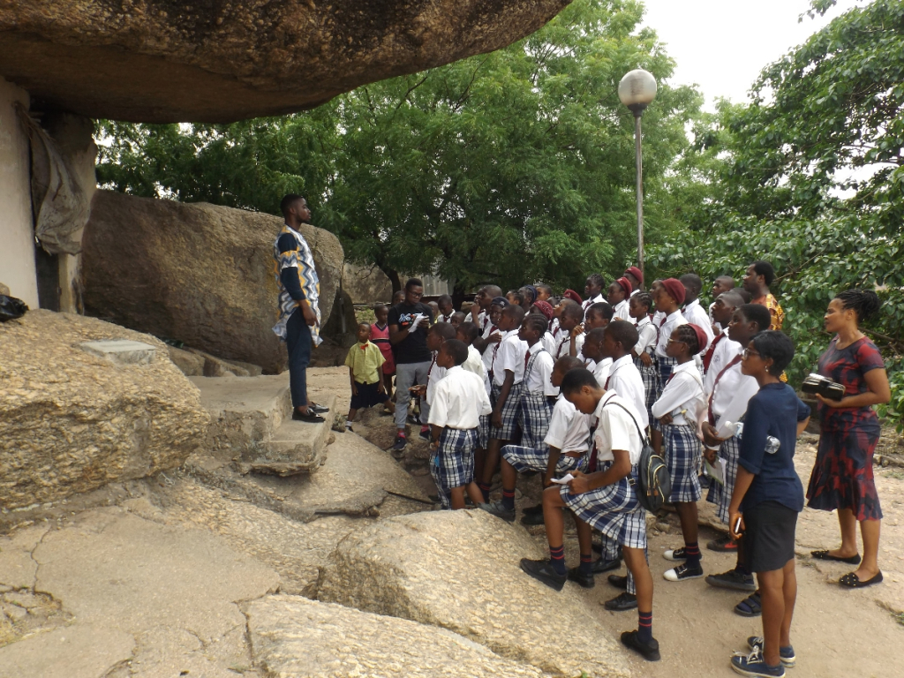
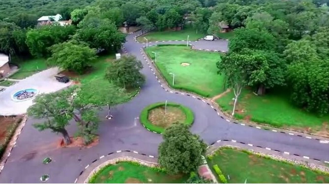
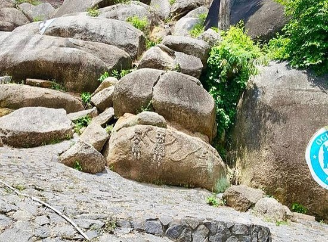
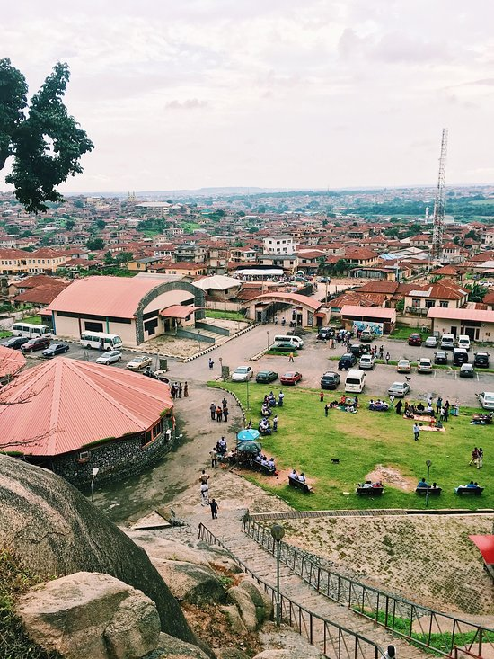
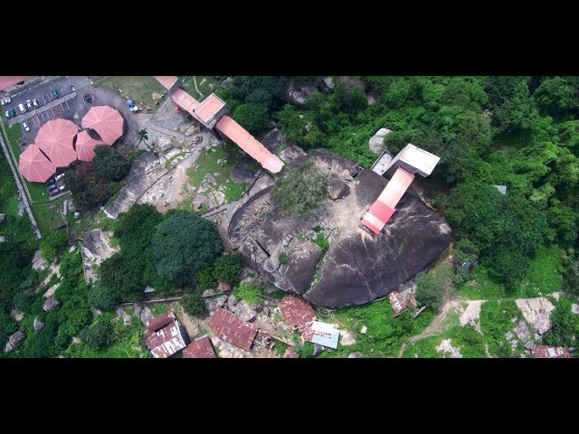

The famous and beautiful Olumo Rock, a wonder of nature and a scene to behold.
The Tourist Complex Entrance.
Footprints of Warriors who used the Rock caves as a refuge and hideout from enemies.
Ancient Food Pounding Hollows used for food preparation during the war times.
Automated Lift which takes Visitors through viewing the different levels of the rock up to the Peak of the Rock.
Manual Staircase used by visitors to reach the top of the rock.
Entrance to one of the caves inside the Rock. These caves were used
as hideouts by the warriors during the 19th century war.
Some of the visitors to the famous Olumo Rock posing for picture behind the water fountain.
Foreign Visitors to Olumo Rock and taking a striking pose behind the rock.
Caves that served as a fortress and hideouts to the warriors during the war times.
A piece of Rock Hanging between two big Rocks which is a wonder to behold.
An Hertage Museum named after a world famous musician Fela Kuti, located inside the Tourist Complex
An Ancient Cave House located inside the Rock
The water fountain sits right in the middle of the complex and Visitors are greeted with it to create a
nice and relaxed ambience.
A foreign tourist posing for a picture inside a cave
Another view of the water fountain located in the middle of the centre.
The gigantic and famous Olumo Rock in its glory and splendour.
Tie and Dye cloth making, one of the predominant occupation of the people where the Olumo rock
is located.
A tourist wearing the tie and Dye African Batik. This print is now trending worldwide and has
been adopted by big clothing brands and can readily be seen on t-shirts, face-caps, duvet covers, curtains etc.
A broad view of inside the rock showing fractured rocks and broken walls underneath it.
Some Visitors taking the stairway to Climb the Olumo Rock

Some images carved out of the Rock by early dwellers of the rock.

The ayo game is being played and enjoyed by both the young and old. It is one of the activities
that visitors can enjoy when they visit the centre.

Women playing the ayo game. It is both fun and relaxing.

Secondary school students on an excursion trip to Olumo Rock to learn about its history
and significance.

Some green areas provided for visitors relaxation. Visitors avail of these areas for
picnics.

Some fragments of the Rock.

Relaxation Spot provided by the centre for visitors use.

Capturing the view of the tourist centre from the top.
Foreign Visitors to Olumo Rock and taking a striking pose behind the rock.